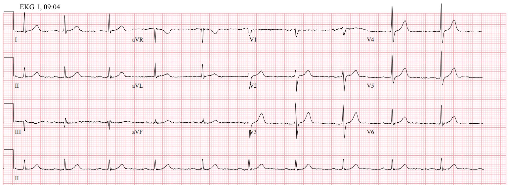
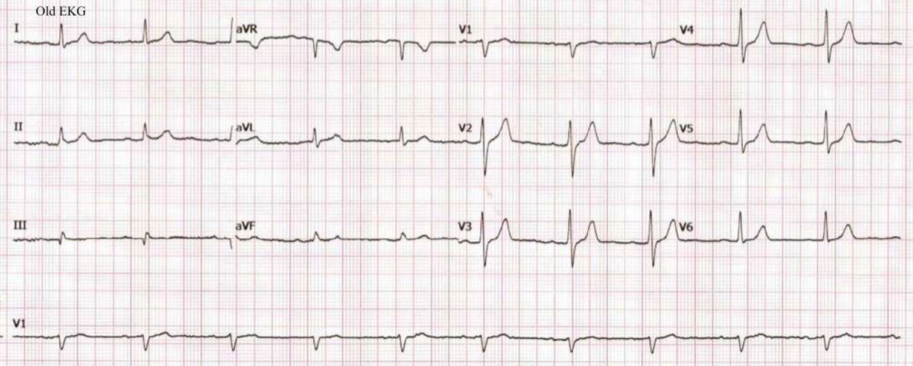
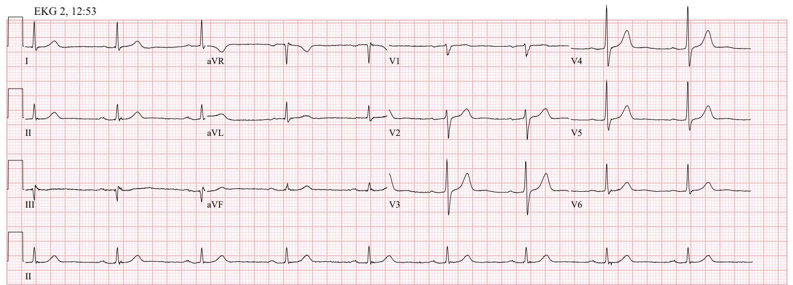
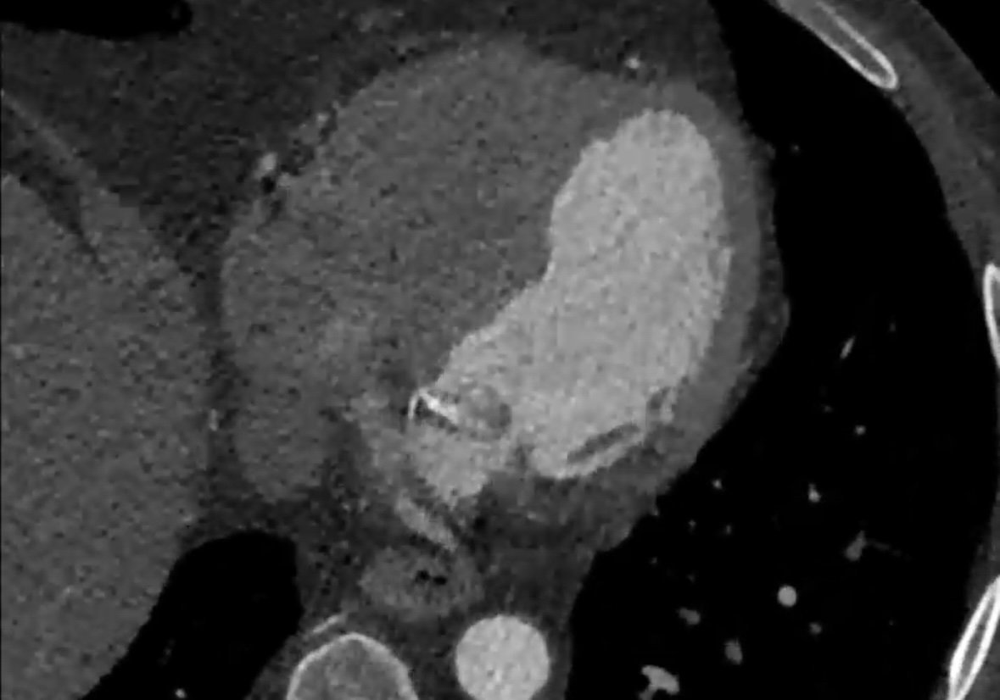
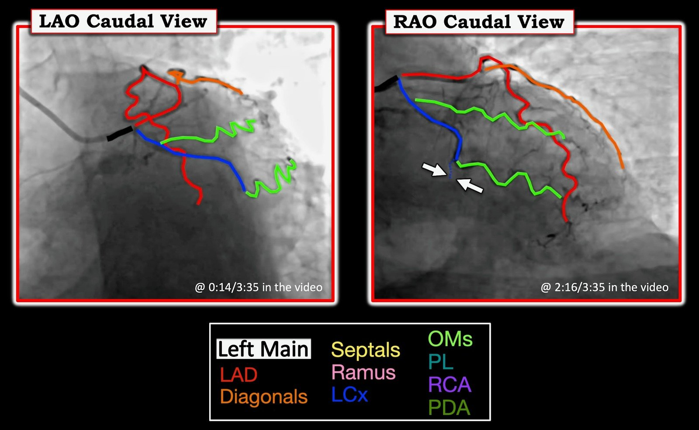
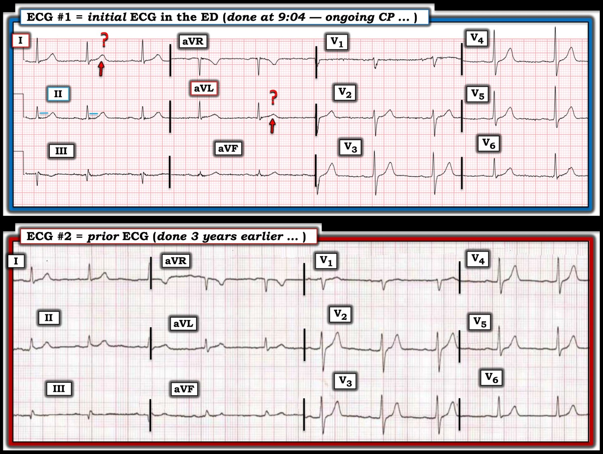

04/05/2025 — Đau ngực. Điện tâm đồ này có hoàn toàn bình thường không? Troponin T độ nhạy cao lần đầu = 32 ng/L. Xử trí? Chẩn đoán?
Bản dịch tiếng Việt của bài "Chest pain. Is this EKG completely Normal? First hs troponin T = 32 ng/L. Management? Diagnosis?" – Dr. Smith’s ECG Blog. Giữ nguyên toàn bộ 7 hình ảnh và 1 video của bản gốc.
Ca này do Hans Helseth đóng góp (anh sắp bước vào trường y). Smith và Grauer biên tập và bổ sung.
Một người đàn ông 75 tuổi có tăng huyết áp và rối loạn lipid máu được đội cấp cứu ngoài viện (EMS) đưa đến khoa cấp cứu vì đau ngực kèm nôn kéo dài 1.5 giờ. Nhân viên cấp cứu ngoài viện đã cho 3 liều nitro ngậm dưới lưỡi và 4 viên aspirin liều thấp, nhưng không thuốc nào làm giảm đau.
Các dấu hiệu sinh tồn của ông bình thường.
Điện tâm đồ của ông tại khoa cấp cứu (ED) được ghi lúc 09:04, khi đang còn đau ngực:


Nhịp xoang tần số 61 lần/phút. Thời gian, trục và hình dạng của QRS và sóng T đều bình thường.
Vậy thì, ĐÚNG, đây là một điện tâm đồ hoàn toàn bình thường.
Có sẵn một điện tâm đồ cũ từ ba năm trước để đối chiếu:


Nó giống hệt.
Dr. Balasubramanian đã viết thư cho biết ông không nghĩ điện tâm đồ này bình thường:
“Thưa Dr Smith, Điện tâm đồ tại khoa cấp cứu (ED) cho thấy rõ
ST thẳng đuỗn ở aVL, thấy rõ khi so với đoạn ST
của các chuyển đạo kế bên II & V2 (như Dr Ken
Grauer cũng đã bình luận). Hơn nữa, đây là thay đổi mới xuất hiện so với điện tâm đồ cũ. Tiếp theo, xin lưu ý các SÓNG N ở II, III, aVF, V5 & V6. Những sóng này xuất hiện trong OMI do LCX. Các sóng N này thấy rõ trên điện tâm đồ thứ hai. Chúng không thấy trên điện tâm đồ cũ.
(Sóng N còn được gọi là “sóng hoạt hóa muộn” (delayed activation waves))
Smith: Tôi không thấy sóng N, và dù có chút ST thẳng đuỗn nào ở aVL đi nữa thì tôi cũng không thấy.
Tôi không loại trừ khả năng có những thứ mà đơn giản là tôi không thể thấy. Tôi thường xuyên thấy những điều mà các “chuyên gia” tự xưng khác không thấy được. Chỉ vì bạn không thấy điều gì đó trên điện tâm đồ không có nghĩa là nó không có ở đó.
Queen of Hearts không thấy bất kỳ bằng chứng nào của OMI, dù điều đó không có nghĩa là cô ấy cho rằng điện tâm đồ hoàn toàn bình thường. Tôi vẫn cho rằng nó hoàn toàn bình thường, ngay cả sau khi đã cân nhắc các bình luận của Dr. Balasubramanian. Nếu tôi cho rằng nó bình thường và Queen of Hearts cũng không thấy gì, liệu tôi có thể dạy bất kỳ ai ngoài kia nhìn ra những dấu hiệu mà Dr. B mô tả và tin rằng chúng đặc hiệu không? Không.
Không đời nào bạn nghi ngờ OMI chỉ từ điện tâm đồ này. Bạn có thể kích hoạt phòng thông tim (cath lab) chỉ dựa trên biểu hiện lâm sàng, vì đây là bệnh cảnh nguy cơ RẤT cao.
_________
Bác sĩ khoa cấp cứu đã đọc đúng điện tâm đồ này là bình thường. Bệnh nhân có dấu hiệu sinh tồn và xét nghiệm máu bình thường, ngoại trừ troponin T độ nhạy cao (hs-troponin) đo lúc 09:14 là 32 ng/L (khoảng tham chiếu 6-15).
_______
Smith: Chuyện này đơn giản. Bệnh nhân này đau ngực và có troponin tăng mà không giải thích được bằng nguyên nhân nào khác (troponin tăng do tổn thương cơ tim mạn tính có thể giải thích được nếu bệnh nhân bị suy tim hoặc suy thận đang lọc máu). (Tổn thương cơ tim cấp KHÔNG do nhồi máu cơ tim cấp có thể giải thích bằng các bệnh như thuyên tắc phổi, takotsubo, viêm cơ tim, và nhiều bệnh khác). Không có gì gợi ý một chẩn đoán nào phù hợp với tổn thương cơ tim cấp hoặc mạn tính.
Do đó, theo định nghĩa, đây là nhồi máu cơ tim cấp theo Định nghĩa toàn cầu lần thứ 4 về nhồi máu cơ tim, bất kể điện tâm đồ ra sao. Đây là nhồi máu cơ tim típ 1 hay típ 2? (Típ 1 là do ACS; típ 2 là do mất cân bằng cung-cầu). Không có gì gợi ý mất cân bằng cung-cầu của nhồi máu cơ tim típ 2. Cung: thiếu máu, tụt huyết áp, thiếu oxy. Cầu: nhịp nhanh nặng, tăng huyết áp nặng.
Bất kỳ nhồi máu cơ tim cấp típ 1 nào có đau ngực dai dẳng không đáp ứng với aspirin và nitroglycerin đều cần được đưa cấp cứu đến phòng thông tim. Đây là khuyến cáo của TẤT CẢ các guideline NSTEMI của ACC/AHA và cả ESC.
Do đó, bệnh nhân nên được dùng nitroglycerin ngậm dưới lưỡi hoặc tiêm tĩnh mạch liều nạp (bolus), cho tới mức huyết áp không còn dung nạp được hoặc cho tới khi hết đau. Nếu không hết đau, cần kích hoạt phòng thông tim.
Đây là cách mọi việc nên diễn ra (2 bài trước):
Persistent Chest Pain, an Elevated Troponin, and a Normal ECG. At midnight. (Đau ngực dai dẳng, troponin tăng và điện tâm đồ bình thường. Lúc nửa đêm.)
Is there OMI on this ECG? (Có OMI trên điện tâm đồ này không?)
_________
Lúc 11:02, troponin tăng lên 48 ng/L. Điện tâm đồ được ghi lại lúc 12:53 vì đau ngực vẫn tiếp diễn và troponin đang tăng:


Tần số tim giảm nhẹ. Ngoài ra không thay đổi.
Lúc 13:11, troponin lại tăng, lần này lên 80 ng/L. Bác sĩ khoa cấp cứu đã hội chẩn ca bệnh với khoa tim mạch, và khoa tim mạch khuyên tạm chưa dùng heparin và đưa bệnh nhân đi chụp CT mạch vành. Khuyến nghị là cho bệnh nhân xuất viện nếu phim chụp bình thường. Lúc 14:22, có kết quả chụp. Đây là ảnh chụp màn hình từ phim chụp:


Có một vùng tối hơn ngang qua thành bên đoạn đáy, biểu hiện thiếu máu cục bộ xuyên thành. Phim chụp được đọc là cho thấy:
- Một tổn thương LAD có khả năng gây hạn chế dòng chảy
- Tắc hoàn toàn Cx kèm nhồi máu cơ tim cấp đang diễn ra
Khoa tim mạch đã nhận bệnh nhân để thông tim. Phòng thông tim được chuẩn bị và bệnh nhân được đưa đi chụp mạch vành xâm lấn lúc 16:04. Willy Frick đã có nhã ý chú thích và thuyết minh các hình ảnh thông tim:
Ken Grauer cũng đã tạo hình này để tham khảo:


Có nứt vỡ mảng xơ vữa với tắc hoàn toàn do huyết khối đoạn giữa động mạch mũ trái (Left Cx) kín đáo. Huyết khối đã được hút và tổn thương được đặt stent.
Không có điện tâm đồ hay troponin nào được ghi nhận sau chụp mạch. Siêu âm tim ngày hôm sau cho thấy giảm động thành bên từ đoạn đáy đến đoạn giữa, với EF ước tính 55-60%. Bệnh nhân được xuất viện hai ngày sau đó với chẩn đoán NSTEMI.
_______________________________________
Điện tâm đồ có thể hoàn toàn bình thường dù đang có nhồi máu cơ tim do tắc (OMI). Những ca như thế này nhấn mạnh tầm quan trọng của xét nghiệm troponin nhiều lần liên tiếp và thông tim cấp cứu khi đau ngực kháng trị. Ca này cũng cho thấy một khiếm khuyết lớn của khái niệm “NSTEMI”. Bệnh học ở đây giống hệt với bệnh học từng được gọi là “STEMI” – nứt vỡ mảng xơ vữa cấp với tắc hoàn toàn động mạch vành do huyết khối. Tại sao chẩn đoán lại phải khác đi chỉ vì nó không thể hiện rõ trên điện tâm đồ? Chẩn đoán đã rõ ràng qua mọi thước đo khác: triệu chứng, troponin, CT, chụp mạch vành xâm lấn, siêu âm tim.
Guideline của AHA/ACC về xử trí bệnh nhân hội chứng vành cấp không ST chênh lên (AHA/ACC Guideline for the Management of Patients With Non–ST-Elevation Acute Coronary Syndromes) khuyến cáo chụp mạch vành xâm lấn ngay lập tức (trong vòng 2 giờ) cho bệnh nhân có đau thắt ngực kháng trị (xem trang 30). Tuy nhiên, Lupu và cs. nhận thấy các guideline này chỉ được tuân thủ trong 6.4% trường hợp.
Những điểm cần học:
- Điện tâm đồ có thể hoàn toàn bình thường trong OMI cấp
- Chụp mạch vành trong vòng hai giờ được khuyến cáo cho bệnh nhân có đau ngực kháng trị và có bằng chứng cho thấy đau ngực là do hội chứng vành cấp (và do đó là “đau thắt ngực”)
- Một kết quả troponin tăng ở bệnh nhân mới đau ngực và không có lý do nào khác làm tăng troponin chính là nhồi máu cơ tim cấp.
- Nếu cơn đau ngực đó kháng trị, thì đó là OMI cho tới khi chứng minh được điều ngược lại và cần kích hoạt phòng thông tim cấp cứu.
- Mô hình nhồi máu cơ tim cấp nên dựa trên bệnh học nền (tắc mạch), không dựa trên bất kỳ đặc điểm điện tâm đồ nào. Chúng ta nên từ bỏ “STEMI/Non-STEMI” để chuyển sang “OMI/NOMI”. Mô hình OMI/NOMI thừa nhận rằng
- 1) có những đặc điểm điện tâm đồ ngoài ST chênh lên giúp chẩn đoán OMI và
- 2) đôi khi điện tâm đồ không cho thấy OMI dù OMI đang hiện diện, và chúng ta cần dùng các phương tiện khác, cho tới và bao gồm cả chụp mạch vành, để tìm ra nó.

===================================
BÌNH LUẬN CỦA TÔI, bởi KEN GRAUER, MD (4/5/2025):
===================================
Tôi thấy ca hôm nay của Hans Helseth vừa thú vị vừa sâu sắc vì một số lý do:
- Điện tâm đồ ban đầu của bệnh nhân này bình thường (hoặc ít nhất — trông gần như bình thường … ).
- Điện tâm đồ thứ 2 (và cũng là cuối cùng) được ghi trong ca này — không khác biệt đáng kể so với bản ghi ban đầu (tức là cũng được đọc là điện tâm đồ “bình thường”) — vậy mà thông tim lại cho thấy tắc LCx cấp.
- Hình ảnh LCx tắc cấp trên phim thông tim rất kín đáo, và có thể dễ bị bỏ sót. Nhưng như phần thuyết minh tuyệt vời ở trên của Dr. Frick đã chứng minh — không có chút nghi ngờ nào về tình trạng tắc LCx. “Bài học” ở đây là việc dựa vào 2 điện tâm đồ không chẩn đoán và mức tăng troponin khiêm tốn như trong ca hôm nay hoàn toàn có thể dễ dàng dẫn tới việc cho bệnh nhân này xuất viện sớm.
- Thông tim cuối cùng được thực hiện lúc 16:04 — tức là 7 giờ sau điện tâm đồ ban đầu. Như vậy là muộn khoảng 5-đến-6 giờ so với thời điểm lẽ ra phải thông tim. Và dù tôi chẳng bao giờ thích phê phán bằng “kính nhìn hồi cứu” (retrospectoscope) (nhất là với những ca mà tôi không có mặt — và tôi thiếu những thông tin quan trọng) — vẫn có một số thiếu sót quan trọng trong ca này đáng được lưu tâm, để việc xử trí các ca tương tự có thể được cải thiện.
Điện tâm đồ ban đầu có “bình thường” không?
Trước đây tôi đã bàn về vấn đề chúng ta định nghĩa thế nào là một điện tâm đồ “bình thường” (Xem Bình luận của tôi trong bài ngày 15 tháng Một năm 2024 và bài ngày 12 tháng Ba năm 2025 trên Dr. Smith’s ECG Blog).
- “Quan điểm của tôi” về câu hỏi này (từ bài ngày 15 tháng Một năm 2024): Định nghĩa về một điện tâm đồ “bình thường” — phụ thuộc vào hoàn cảnh lâm sàng mà bản ghi được thực hiện và phụ thuộc vào người đang đọc bản ghi.
- Cả hoàn cảnh lâm sàng lẫn người đọc bản ghi đều quan trọng then chốt.
Ví dụ — Trong Hình 1, tôi đã đặt lại điện tâm đồ ban đầu của ca hôm nay và điện tâm đồ trước đó được ghi 3 năm trước. Hãy hình dung 2 tình huống lâm sàng.
Tình huống lâm sàng #1:
- Điều gì xảy ra nếu điện tâm đồ #1 được ghi ở một người trẻ tuổi trước đó khỏe mạnh, nhập viện qua khoa cấp cứu vì đau bụng — nhưng không đau ngực (CP).
- Diễn giải của tôi — Với tình huống lâm sàng này, tôi sẽ đọc điện tâm đồ #1 là có một vài thay đổi ST-T không đặc hiệu tối thiểu, trông không có vẻ cấp tính. Tôi sẽ không chỉ định troponin cho bệnh nhân này — và cũng không có chỉ định ghi lại điện tâm đồ.


Tình huống lâm sàng #2:
- Sẽ thế nào nếu cũng chính điện tâm đồ #1 này lại được ghi ở một người đàn ông 75 tuổi được EMS đưa đến khoa cấp cứu với bệnh sử đau ngực và nôn 1,5 giờ — đau ngực này không đỡ khi dùng NTG — và đau ngực vẫn đang tiếp diễn tại thời điểm ghi điện tâm đồ #1.
- Diễn giải của tôi — Với bối cảnh lâm sàng này (đây chính xác là tình huống lâm sàng của bệnh nhân trong ca hôm nay) — ngay cả trước khi nhìn vào điện tâm đồ này, tôi biết mình đang đối diện với một bệnh nhân có nguy cơ cao hơn bị một biến cố cấp.
- Do đó — ngưỡng để tôi diễn giải điện tâm đồ #1 là có khả năng đáng ngờ cho một biến cố cấp sẽ được hạ thấp đáng kể.
- Xin nhấn mạnh: Tôi hoàn toàn không nói rằng điện tâm đồ #1 có giá trị chẩn đoán một biến cố cấp. Ngược lại — điện tâm đồ #1 là một điện tâm đồ không có giá trị chẩn đoán. Nhưng — với bối cảnh lâm sàng của ca hôm nay (và trước khi tôi xem điều gì đã xảy ra trong ca hôm nay) — tôi thấy sóng T ở cả hai chuyển đạo bên cao trông hơi “đầy đặn” hơn mong đợi (mũi tên ĐỎ trong Hình 1) — và tôi thấy có gợi ý ST thẳng đuỗn kín đáo ở chuyển đạo II. Tôi không thấy thay đổi nào khác — nhưng với bệnh sử của Tình huống lâm sàng #2 — tôi tự hỏi liệu đây có thể là OMI do LCx?
==============================
Làm gì tiếp theo (nếu có)?
- Như tôi đã đề cập ở trên, trong trường hợp Bối cảnh lâm sàng #1 — Do không có đau ngực ở người trẻ trước đây khỏe mạnh nhập viện qua khoa cấp cứu vì đau bụng này — tôi sẽ không chỉ định xét nghiệm troponin, và tôi sẽ không ghi lại điện tâm đồ.
- Ngược lại, với Tình huống lâm sàng #2 (là tình huống của bệnh nhân hôm nay) — với bệnh sử đau ngực dữ dội mới khởi phát không đỡ khi dùng NTG x 3 — Chúng ta cần ghi các điện tâm đồ liên tiếp và làm troponin nhiều lần. Và đặc biệt khi bệnh nhân này đang bị đau ngực dữ dội liên tục — điện tâm đồ ghi lại lần 1 nên được thực hiện trong vòng 10-20 phút (tức là không muộn hơn 9:24).
- Thay vào đó — điện tâm đồ đã không được ghi lại cho tới 12:53 (tức là gần 4 giờ sau khi ghi bản ghi ban đầu! ).
- Ngay cả sau khi kết quả troponin đầu tiên trả về tăng (32 ng/L — với khoảng bình thường = 6-15 ng/L) — và ngay cả sau khi troponin lần 2 trả về còn tăng cao hơn (lên 48 ng/L lúc 11:02) — điện tâm đồ vẫn không được ghi lại cho tới 12:53.
LƯU Ý: Điện tâm đồ ghi lại đã được diễn giải đúng là không cho thấy thay đổi đáng kể so với bản ghi lần 1. Dù vậy:
- Như phần bàn luận ở trên của Hans Helseth — đau ngực dai dẳng có tính chất gợi ý thiếu máu cục bộ (đặc biệt khi đau ngực dữ dội kéo dài >1-2 giờ), ngay cả khi không có thay đổi điện tâm đồ có giá trị chẩn đoán — là chỉ định thông tim để xác định giải phẫu (tức là để loại trừ một biến cố tim cấp).
- Chỉ định thông tim khi đau ngực có tính chất thiếu máu cục bộ kéo dài này còn mạnh hơn nhiều trong ca hôm nay vì các giá trị troponin bất thường (và đang tăng).
- Điểm MẤU CHỐT: Việc cả 2 điện tâm đồ đã ghi đều không có giá trị chẩn đoán một biến cố tim cấp hoàn toàn không loại trừ khả năng đã có những thay đổi điện tâm đồ có giá trị chẩn đoán, mà chỉ đơn giản là chúng không được ghi lại vì người điều trị đã chờ gần 4 giờ mới ghi lại bản ghi ban đầu.
==============================
Hãy xem xét Tình huống lâm sàng #3 và #4 …
==============================
Tình huống lâm sàng #3:
- Sẽ thế nào nếu đau ngực tiếp diễn với cùng cường độ từ 9:04 (khi ghi điện tâm đồ ban đầu) — cho tới 12:53 (khi ghi điện tâm đồ lặp lại).
- Diễn giải của tôi — Do triệu chứng không thay đổi trong gần 4 giờ trôi qua giữa lúc ghi điện tâm đồ #1 và điện tâm đồ #2 — chúng ta có thể nói rằng dù đau ngực vẫn tiếp diễn, điện tâm đồ đã không cho thấy bằng chứng của một biến cố cấp. Đôi khi điều này vẫn xảy ra. Dù vậy — troponin tăng dần kèm đau ngực dai dẳng có tính chất thiếu máu cục bộ đã là chỉ định thông tim nhiều giờ trước khi điện tâm đồ ghi lại đó cuối cùng mới được thực hiện.
Tình huống lâm sàng #4:
- Sẽ thế nào nếu thay vào đó — đau ngực của bệnh nhân này hết hoàn toàn 30 đến 60 phút sau khi ghi điện tâm đồ #1 — rồi chỉ 10 phút sau lại tái phát, dữ dội hơn nhiều so với bất kỳ lúc nào trước đó. Nhưng 15 phút sau đó — dù vẫn còn, đau ngực của bệnh nhân trở lại đúng mức cường độ (chưa tối đa) mà ông đã báo lúc ghi điện tâm đồ ban đầu.
- Diễn giải của tôi — Một “cơ hội vàng” sẽ bị bỏ lỡ nếu không ghi điện tâm đồ vào lúc đau ngực của bệnh nhân này hết — và, nếu không ghi điện tâm đồ 10 phút sau đó khi đau ngực của bệnh nhân ở mức tối đa.
- Điểm MẤU CHỐT: Rất có thể với Tình huống lâm sàng #4 — một bức tranh điện tâm đồ khác hẳn đã có thể ghi được khi đau ngực của bệnh nhân hết — và, thậm chí có thể đã thỏa tiêu chuẩn STEMI NẾU một điện tâm đồ ghi lại được thực hiện 10 phút sau đó khi đau ngực của ông ở mức tối đa.
==============================
Những điểm cần học bổ sung:
- Việc một điện tâm đồ có nên được gọi là “bình thường” hay không — phụ thuộc cả vào bối cảnh lâm sàng khi ghi bản ghi đó — và — vào người diễn giải bản ghi.
- 7 giờ mà ca hôm nay phải chờ mới được thông tim có thể đã được rút ngắn đáng kể nếu tuân theo các nguyên tắc quan trọng sau: i) Cần ghi lại điện tâm đồ thường quy trong vòng ~20-30 phút sau bản ghi ban đầu khi bệnh nhân đến khoa cấp cứu vì đau ngực mới khởi phát có tính chất thiếu máu cục bộ; ii) Cần ghi thêm điện tâm đồ mỗi khi triệu chứng của bệnh nhân thay đổi cho tới khi có thể chẩn đoán xác định là OMI hay không phải OMI; và, iii) Sự hiện diện và mức độ nặng tương đối của đau ngực (tức là theo thang điểm từ 1 đến 10) cần được ghi vào hồ sơ tại thời điểm ghi mỗi điện tâm đồ.